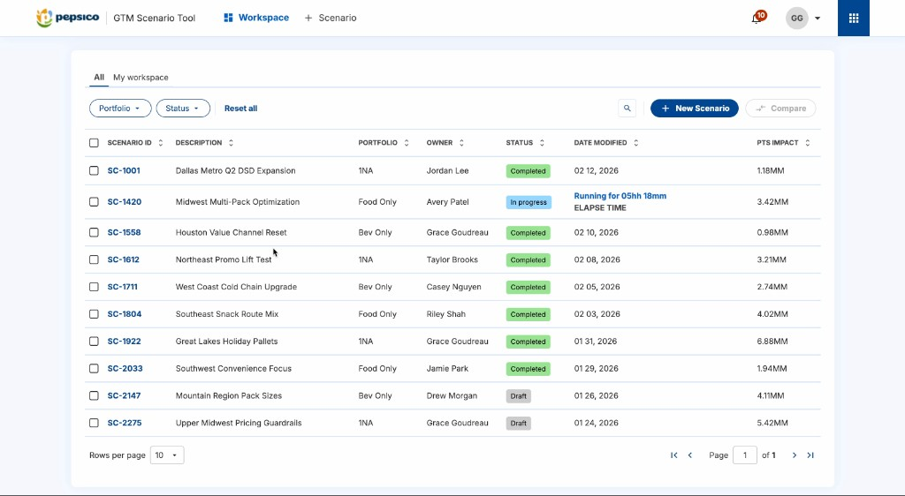
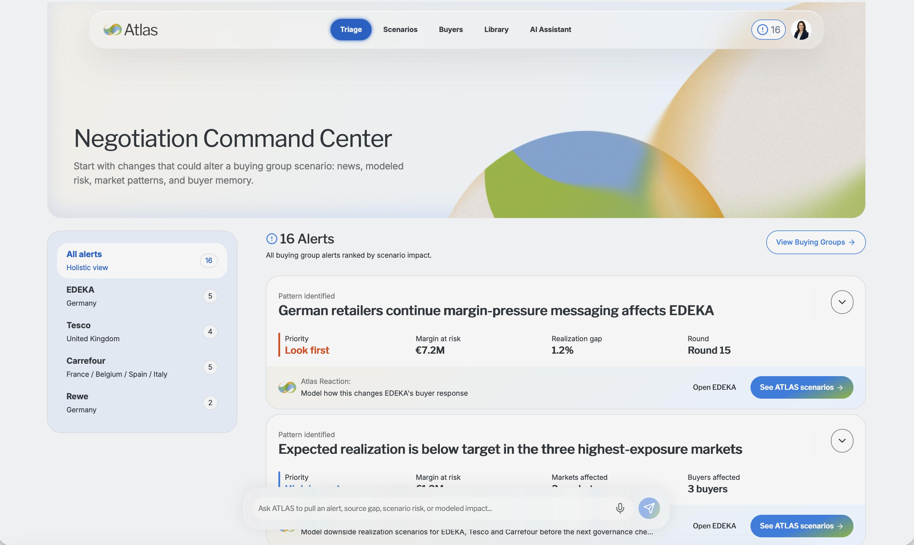
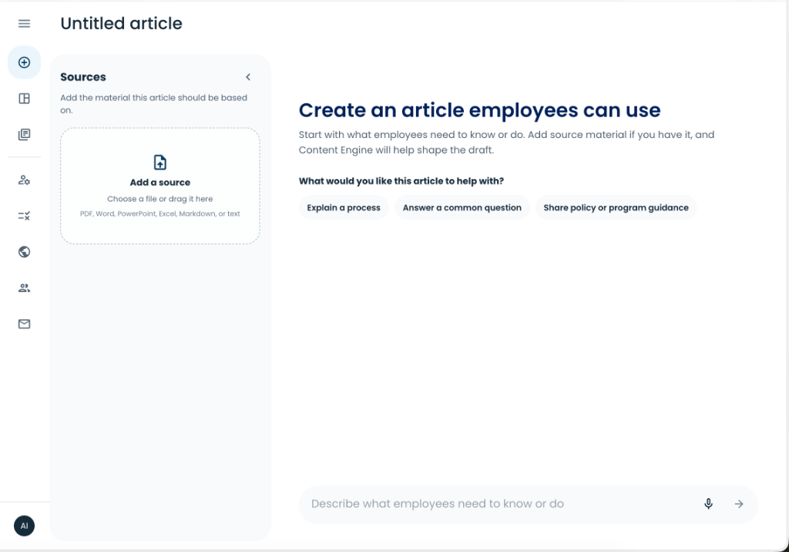
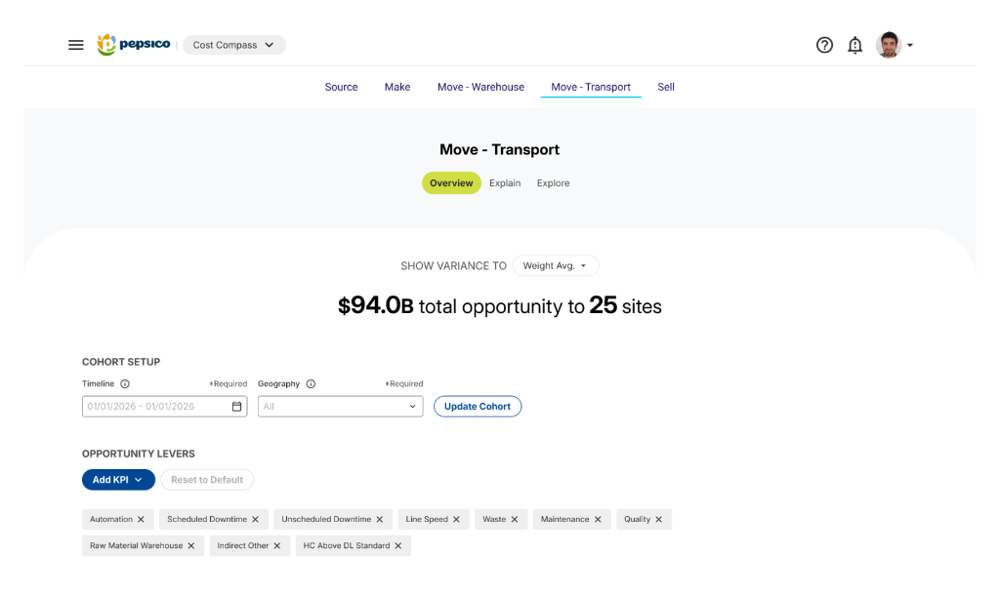

Selected case studies
Recent Work
A curated collection of flagship case studies demonstrating enterprise AI strategy, predictive systems architecture, human-in-the-loop workflows, and complex scale.

Scenario Modeling Workspace
Co-developed a predictive enterprise decision tool in direct partnership with Google, empowering US supply chain planners to simulate logistics and establishing the foundation for predictive AI modeling.
Direct Google co-design cadence, unified novice/power-user workspace, and foundational data loop for AI prediction.
- My role
- Lead UX, Systems IA, and Product Strategy
- Design challenge
- Enterprise Systems Architecture & Ambiguity

ATLAS Decision Intelligence
Led UX strategy and functional code prototype for an AI negotiation engine, designing predictive buyer intelligence, scenario controls, and trust-first explainability for commercial teams.
Live Vercel code build, closed-loop decision architecture, and buyer memory prediction engine.
- My role
- UX Strategy, Prototyping Lead, and Systems IA
- Design challenge
- Decision Intelligence & Explainability under Pressure

Content Operations Agent
Self-initiated a multi-agent AI workflow POC that slashed localized content creation from 2–3 weeks to under 15 minutes, securing executive validation and funding for global enterprise rollout.
Slashed cycle time from 2–3 weeks to <15 mins; secured corporate funding for centralized global deployment.
- My role
- Self-Initiated UX Strategy, Multi-Agent Architecture, and Prototype
- Design challenge
- Proactive Leadership & Human-in-the-Loop AI Orchestration

Cost Compass Redesign
Redesigned a dense agency-led analytics screen into a cleaner enterprise direction with stronger hierarchy, opportunity levers, and suite alignment.
Fast-turn redesign resolving CTX suite fragmentation, unclear opportunity levers, and cognitive load.
- My role
- Lead Redesign & Visual Architecture
- Design challenge
- Complex Analytics & Visual Scannability
Additional work
More product surfaces.
Supporting projects that show operational workflow scale, analytics UX, ecommerce clarity, and prototyping craft.
Global Order Monitoring
Scaled an end-to-end SAP order-tracking workflow across 5 European markets.
→ 06Forecast Analysis
Helped analysts interpret complex forecast outputs with less dependency.
→ 07Portfolio Build
Shows how I use prototyping and AI-assisted development to ship.
→ 08Wonder 3D Prints
End-to-end consumer ecommerce and customized product ordering.
→